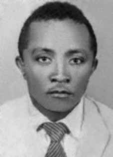

Mariano
Joaquim
da Silva
CIRCUNSTÂNCIAS DA MORTE
Conforme consta do livro Brasil: Nunca Mais, o órgão responsável pela prisão do dirigente da VAR-Palmares Mariano Joaquim da Silva foi o DOI-CODI do II Exército. Depois de ser preso por aquele órgão, Mariano foi transferido para o centro clandestino de tortura do CIE em Petrópolis (RJ) conhecido como Casa da Morte. Nesse local, ele foi visto pela presa política Inês Etienne Romeu. Em seu relato, Inês afirmou que Mariano havia chegado à casa em 2 de maio, vindo de Recife.
Inês, manteve contato com Mariano até 31 de maio, quando ela afirma ter ouvido movimentação estranha durante a madrugada e percebeu que Mariano estava sendo removido. Após perguntar aos carcereiros, no dia seguinte, eles responderam que ele havia sido transferido para o quartel do Exército no Rio de Janeiro. Inês também afirmou que Marino foi torturado na Casa da Morte e interrogado initerruptamente durante quatro dias; foi deixado sem comer, sem dormir e sem beber.
O militante permaneceu quase um mês naquela casa, realizando serviço doméstico e cortando lenha para a lareira. Segundo o relato: Quando fui levada para a casa de Petrópolis, lá já se encontrava um camponês nordestino, Mariano Joaquim da Silva, cognominado Loyola. Conversamos três vezes, duas na presença de nossos carcereiros e uma a sós. Mariano foi preso no dia primeiro ou dois de maio, em Pernambuco. Após sua prisão, permaneceu vinte e quatro horas em Recife, onde foi barbaramente torturado. Seu corpo estava em chagas. Em seguida, foi levado para aquele local, onde foi interrogado durante quatro dias ininterruptamente, sem dormir, sem comer e sem beber.
Permaneceu na casa até o dia trinta e um de maio, fazendo todo o serviço doméstico, inclusive cortando lenha para a lareira. Dr. Teixeira disse-me em princípio de julho que Mariano fora executado porque pertencia ao Comando da VAR-Palmares, sendo considerado irrecuperável pelos agentes do governo. Em setembro de 1971, a imprensa divulgou fichas dos principais “terroristas” procurados. Dentre eles, estava Mariano Joaquim, o Loyola. Após a passagem pela Casa da Morte de Petrópolis ele nunca mais foi visto.
As stated in the book Brasil: Nunca Mais, the body responsible for the arrest of VAR-Palmares leader Mariano Joaquim da Silva was the DOI-CODI of the II Army. After being arrested by that body, Mariano was transferred to the CIE's clandestine torture center in Petrópolis (RJ) known as Casa da Morte. There, he was seen by political prisoner Inês Etienne Romeu. In her report, Inês stated that Mariano had arrived at the house on May 2, coming from Recife.
Inês maintained contact with Mariano until May 31, when she claims to have heard strange movement during the night and realized that Mariano was being removed. After asking the prison guards the next day, they replied that he had been transferred to the Army barracks in Rio de Janeiro. Inês also stated that Marino was tortured in the House of Death and interrogated continuously for four days; he was left without eating, without sleeping and without drinking.
The activist stayed in that house for almost a month, doing domestic work and chopping wood for the fireplace. According to the report: When I was taken to the house in Petrópolis, there was already a peasant from the Northeast, Mariano Joaquim da Silva, known as Loyola. We spoke three times, twice in the presence of our jailers and once alone. Mariano was arrested on the first or second of May, in Pernambuco. After his arrest, he remained in Recife for twenty-four hours, where he was savagely tortured. His body was in wounds. He was then taken to that place, where he was interrogated for four days without interruption, without sleeping, eating or drinking.
He remained in the house until the thirty-first of May, doing all the domestic work, including chopping wood for the fireplace. Dr. Teixeira told me at the beginning of July that Mariano had been executed because he belonged to the VAR-Palmares Command, and was considered irretrievable by government agents. In September 1971, the press released files on the main “terrorists” wanted. Among them was Mariano Joaquim, Loyola. After passing through the House of Death in Petrópolis, he was never seen again.
Como consta en el libro Brasil: Nunca Mais, el organismo responsable de la detención del líder del VAR-Palmares Mariano Joaquim da Silva fue el DOI-CODI del II Ejército. Tras ser detenido por ese organismo, Mariano fue trasladado al centro clandestino de tortura del CIE en Petrópolis (RJ), conocido como Casa da Morte. Allí fue visto por la prisionera política Inês Etienne Romeu. En su relato, Inês afirmó que Mariano llegó a la casa el 2 de mayo, procedente de Recife.
Inês mantuvo contacto con Mariano hasta el 31 de mayo, cuando afirma haber escuchado un movimiento extraño durante la noche y se dio cuenta de que estaban sacando a Mariano. Después de preguntar a los guardias de la prisión al día siguiente, estos respondieron que había sido trasladado al cuartel del Ejército en Río de Janeiro. Inês también afirmó que Marino fue torturado en la Casa de la Muerte e interrogado continuamente durante cuatro días; se quedó sin comer, sin dormir y sin beber.
La activista permaneció en esa casa durante casi un mes, realizando labores domésticas y cortando leña para la chimenea. Según el informe: Cuando me llevaron a la casa de Petrópolis, ya estaba allí un campesino del Nordeste, Mariano Joaquim da Silva, conocido como Loyola. Hablamos tres veces, dos en presencia de nuestros carceleros y una vez a solas. Mariano fue detenido el primero o dos de mayo, en Pernambuco. Después de su arresto, permaneció en Recife veinticuatro horas, donde fue salvajemente torturado. Su cuerpo estaba lleno de heridas. Luego fue conducido a ese lugar, donde fue interrogado durante cuatro días sin interrupción, sin dormir, comer ni beber.
Permaneció en la casa hasta el treinta y uno de mayo, realizando todas las tareas domésticas, incluido cortar leña para la chimenea. El doctor Teixeira me dijo a principios de julio que Mariano había sido ejecutado por pertenecer al Comando VAR-Palmares y era considerado irrecuperable por los agentes del gobierno. En septiembre de 1971, la prensa publicó expedientes sobre los principales “terroristas” buscados. Entre ellos estaba Mariano Joaquim, Loyola. Después de pasar por la Casa de la Muerte en Petrópolis, nunca más se le volvió a ver.